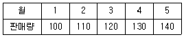
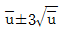
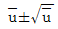
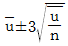
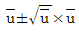
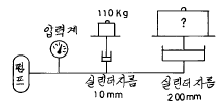

건설기계정비기능장 (2002-07-21 기출문제)
1과목: 임의 구분
1. 2행정 사이클 가솔린 기관의 실린더 내경이 109(mm)이고, 행정이 129(mm), 실린더수 6개 일때 총배기량은?
- 6939.2(cc)
- 7043.2(cc)
- 7222.4(cc)
- 7462.4(cc)
(정답률: 알수없음)

2. 기관의 피스톤에서 압축링을 설치하는 목적으로 가장 알맞는 것은?
- 실린더 내면의 유막형성을 위하여
- 피스톤과 실린더사이에 적합한 틈새를 주기 위해
- 피스톤의 마멸을 방지하기 위하여
- 피스톤과 실린더사이의 기밀을 유지하며 피스톤의 열을 방출시키기 위하여
(정답률: 73%)
3. 윤활유의 구비조건에 들지 않는 것은?
- 냉각작용
- 밀봉작용
- 응력분산작용
- 산화작용
(정답률: 알수없음)
4. 밀폐형 노즐 중 구멍형(hole type)의 장점이 아닌 것은?
- 분사압력이 높으므로 무화가 양호하다.
- 열효율이 높다.
- 연료를 완전히 연소시킬수 있어 연료 소비량이 적다.
- 분사공이 적어 가공하기가 쉽다.
(정답률: 알수없음)
5. 디젤기관에서 과급을 함으로써 얻어지는 잇점이 아닌 것은?
- 엔진 출력을 증가시킨다.
- 마력당 중량은 감소한다.
- 엔진 회전수가 빨라진다.
- 기계의 효율이 좋아진다.
(정답률: 90%)
6. 디젤기관에 사용되는 조속기 중 회전속도 변화에 따른 원심력을 이용한 것은?
- 공기식 조속기
- 기계식 조속기
- 복합식 조속기
- 유압식 조속기
(정답률: 알수없음)
7. 직접분사식 연소실의 장점으로 맞지 않는 것은?
- 구조가 간단하기 때문에 열효율이 높다.
- 연료의 분사압력이 낮다.
- 실린더 헤드의 구조가 간단하다.
- 냉각손실이 적다.
(정답률: 73%)
8. 화씨 100℉를 섭씨로 환산하면 몇 도가 되는가?
- 37.8℃
- 45.2℃
- 28.9℃
- 32.3℃
(정답률: 91%)
9. 장행정 디젤기관에서 행정체적이 1000cc, 제동마력 55ps, 회전수 4500rpm 의 4행정 사이클 기관에서 기계적 효율이 85% 일 때 제동평균 유효압력은?
- 5.5kgf/cm2
- 9kgf/cm2
- 10kgf/cm2
- 11kgf/cm2
(정답률: 16%)
10. 4행정 사이클에서 흡기밸브를 하사점을 지나서 닫는 이유는?
- 흡입 작용을 돕기 위해서
- 압축 작용을 돕기 위해서
- 크랭크 회전을 돕기 위해서
- 착화를 돕기 위해서
(정답률: 알수없음)
11. 디젤기관의 연소실 중 NOx가 가장 많이 배출되는 연소실은?
- 직접분사식
- 예연소실식
- 공기실식
- 와류실식
(정답률: 알수없음)
12. 디젤기관에서 인체에 해로운 배기가스를 배출하는 원인이 아닌 것은?
- 분사시기가 너무 빠르다.
- 공기 과잉률이 크다.
- 유황성분이 포함된 연료
- 노즐 및 분사펌프 불량
(정답률: 알수없음)
13. 정격 출력이 145ps인 건설기계의 연료소비율이 151g/ps·h을 소비하여 작업하였을 때 시간당 연료 소비량은 몇 ℓ/h인가? (단, 작업조건의 부하율은 70%이며 연료의 비중은 0.84이다.)
- 12.87ℓ/h
- 18.25ℓ/h
- 26.27ℓ/h
- 36.51ℓ/h
(정답률: 46%)
14. 전자제어 디젤엔진에서 ECU의 입력 신호라고 볼 수 없는 것은?
- 수온 센서
- 글로우 플러그 릴레이
- A/T시프트 포지션
- 차속 센서
(정답률: 알수없음)
15. 공급자에 대한 보호와 구입자에 대한 보증의 정도를 규정해 두고 공급자의 요구와 구입자의 요구 양쪽을 만족하도록 하는 샘플링 검사방식은?
- 규준형 샘플링 검사
- 조정형 샘플링 검사
- 선별형 샘플링 검사
- 연속생산형 샘플링 검사
(정답률: 알수없음)
16. 표는 어느 회사의 월별 판매실적을 나타낸것이다. 5개월 이동평균법으로 6월의 수요를 예측하면?

- 150
- 140
- 130
- 120
(정답률: 80%)
17. u 관리도의 공식으로 가장 올바른 것은?




(정답률: 알수없음)
18. 도수분포표를 만드는 목적이 아닌 것은?
- 데이터의 흩어진 모양을 알고 싶을 때
- 많은 데이터로부터 평균치와 표준편차를 구할 때
- 원 데이터를 규격과 대조하고 싶을 때
- 결과나 문제점에 대한 계통적 특성치를 구할 때
(정답률: 알수없음)
19. 설비의 구식화에 의한 열화는?
- 상대적 열화
- 경제적 열화
- 기술적 열화
- 절대적 열화
(정답률: 86%)
20. 모든작업을 기본동작으로 분해하고 각 기본동작에 대하여 성질과 조건에 따라 정해놓은 시간치를 적용하여 정미시간을 산정하는 방법은?
- PTS법
- WS법
- 스톱워치법
- 실적기록법
(정답률: 알수없음)
2과목: 임의 구분
21. 수동변속기에서 록킹 볼이 마멸되면 나타나는 현상은?
- 중립에서 소음발생
- 기어가 2중으로 물릴수 있다.
- 기어가 빠지기 쉽다.
- 기어 변속시 충돌음이 발생
(정답률: 알수없음)
22. 트랙터 구조에 있어서 최대의 견인력을 증가시켜 주는 장치는?
- 변속기
- 최종구동기어
- 트랙
- 피니언 및 베벨기어
(정답률: 알수없음)
23. 유체클러치에 있어서 토크 변환율은?
- 1 : 1
- 2 : 1
- 3 : 1
- 4 : 1
(정답률: 알수없음)
24. 수직 및 수평하중을 비롯하여 휠에 걸리는 충격과 옆방향의 작용력 전부를 하우징이 받고 차축은 동력전달만을 하는 액슬 축 형식은?
- 반부동식
- 전부동식
- 고정식
- 3/4부동식
(정답률: 알수없음)
25. 총 중량 20t급 불도저의 제2속에서 견인력은 7,500kgf 이며, 그 때의 차속은 7.2km/h이다. 견인 출력은?
- 200 ps
- 167 ps
- 242 ps
- 3⑤ ps
(정답률: 40%)
26. 엔진에 연결된 클러치의 역할은 어느 것인가?
- 동력을 전달하는 역할만을 한다.
- 동력 전달과 출력을 감소시키는 역할을 한다.
- 동력을 전달 및 차단하는 역할을 한다.
- 힘과 속도를 조절하는 역할을 한다.
(정답률: 알수없음)
27. 유압브레이커(Hydraulic breaker)에 대한 설명 중 관계 없는 것은?
- 작동유압 : 150 ~ 180kgf/cm2
- 타격수 : 350 ~ 1,000회/분
- 충격에너지 : 400 ~ 600kgf.m
- 피스톤행정수 : 2,000 ~ 3,000회
(정답률: 알수없음)
28. 바퀴의 복원력이 핸들에 전달되고 노면의 충격도 완화 시킬수 있는 환향장치는 어떤 것인가?
- 비가역식 환향장치
- 반가역식 환향장치
- 가역식 환향장치
- 배력식 환향장치
(정답률: 알수없음)
29. 크롤러형 유압식 굴삭기에서 트랙구동모터가 한쪽만 작동하고 있을 때 점검해야 할 사항이 아닌 것은?
- 방향제어밸브의 스폴위치 점검
- 안전밸브의 압력제어 불량상태 점검
- 트랙구동모터의 내부 누유 점검
- 메인 릴리프밸브의 내부 누유 점검
(정답률: 알수없음)
30. 아스팔트 믹싱플랜트에서 골재를 입도별로 구분하는 일을 하는 것은?
- 핫 엘리베이터
- 피드 호퍼
- 아스팔트 캐틀
- 진동 스크린
(정답률: 90%)
31. 모터 그레이더의 전륜 경사를 좌,우 20 ~ 30° 정도 경사시키므로서 회전반경을 작게하고 측능 절삭작업시 반력에 의해 그레이더가 옆으로 밀리는 것을 방지하는 장치는?
- 오토미터 장치
- 리이닝 장치
- 탠덤 드라이브 장치
- 틸트 장치
(정답률: 알수없음)
32. 트랙 아이들러의 트랙장력 조정 실린더속에는 어떤 물질을 삽입하여 아이들러를 앞뒤로 이동시키는가?
- 질소가스
- 그리스
- 유압오일
- 코일스프링
(정답률: 알수없음)
33. 공기압축기에서 언로더 밸브의 기능은?
- 공기가 규정압력 이상이 되면 압축공기를 대기로 방출하는 밸브이다.
- 공기의 양을 조절하여 탱크로 보내는 역할을 한다.
- 사용하는 공기의 압력을 상승시켜 주는 역할을 한다.
- 작업이 완료되었을 때 과부하를 막기 위해 공기의 압력을 하강시켜 주는 역할을 한다.
(정답률: 80%)
34. 모터 그레이더의 스케리파이어(scarifier)에 대한 설명으로 틀린 것은?
- 절삭지반의 상태에 따라 스케리파이어의 절삭각도를 조정하여야 한다.
- 절삭깊이를 조정할 수 있도록 스케리파이어 장착위치가 다단으로 되어 있다.
- 스케리파이어는 전, 후진의 모든 작업에 사용할 수 있다.
- 스케리파이어는 나무뿌리 파헤치기 작업시에는 항상 부착해 주어야 한다.
(정답률: 알수없음)
35. 스크레이퍼에서 메인 바디에 고정되어 상하 운동하며 흙을 적재할 때와 내릴 때 열리게 되어 있는 것은?
- 볼 (bowl)
- 커팅 에지 (cutting edge)
- 에이프런 (apron)
- 이젝터 (ejecter)
(정답률: 알수없음)
36. 선기어 치차수가 20개, 링기어 치차수가 60개, 유성기어에서 선기어를 고정하고 링기어가 80회전하면 유성기어 캐리어의 회전수는 얼마가 되는가?
- 45 회전
- 50 회전
- 60 회전
- 65 회전
(정답률: 79%)
37. 블레이드의 커팅 에지는 블레이드에 어떻게 체결되어 있는가?
- 용접되어 있다.
- 리벳팅 되어 있다.
- 끼우는 형식으로 체결되어 있다.
- 볼트로 체결되어 있다.
(정답률: 91%)
38. 트랙터의 롤러에 대한 설명으로 바르지 못한 것은?
- 트랙롤러는 윤활제의 누설을 방지하고 흙물의 침입을 막기 위하여 시일을 사용한다.
- 캐리어롤러에는 부싱을, 트랙롤러에는 테이퍼 롤러를 주로 사용한다.
- 트랙롤러에서 5개의 롤러가 있는 경우 2번과 4번이 이중 플랜지형 롤러를 사용한다.
- 단일 플랜지형과 이중 플랜지형이 있고 트러스트 방향의 하중은 플랜지가 받는다.
(정답률: 40%)
39. 기동전동기의 무부하 시험을 할 때 필요없는 것은?
- 가변저항
- 전류계
- 전압계
- 저항시험기
(정답률: 알수없음)
40. 배터리를 급속 충전 할 때 가장 조심하여야 할 것은?
- 테이퍼 충전
- 배터리의 온도 상승
- 기포의 발생
- 자연 방전
(정답률: 알수없음)
3과목: 임의 구분
41. 배터리 셀페이션 현상의 원인으로 가장 적합한 것은?
- 충전 전압이 높다.
- 전해액의 양이 부족하다.
- 전해액의 온도가 높다.
- 충전 전류가 크다.
(정답률: 알수없음)
42. 기동전동기의 전기자 점검내용 중 단락시험을 하는 이유는?
- 코일이 철심에 절연된 상태 점검
- 코일의 끊어진 상태 점검
- 코일과 코일이 접지된 상태 점검
- 코일과 정류자편과의 접촉상태 점검
(정답률: 64%)
43. DC발전기 조정기에서는 전류 제한기로 전류를 제한하고 AC발전기에서 전류를 제한하는 것은?
- 로터
- 전압 조정기
- 스테이터 코일
- 다이오드
(정답률: 알수없음)
44. 다음 중 전조등의 조도가 부족한 원인이 아닌 것은?
- 축전지의 과충전
- 렌즈의 손상
- 전구의 열화
- 반사경의 손상
(정답률: 77%)
45. 연료탱크의 연료량을 표시하는 연료계의 형식 중 기계식의 형식에 해당되지 않는 것은?
- 밸런싱 코일식
- 바이메탈 저항식
- 연료면 표시기식
- 바이메탈식
(정답률: 60%)
46. 12V 교류발전기가 840W의 출력을 낸다면 이 발전기의 로터 코일 저항은 얼마인가?
- 0.⑤Ω
- 0.17Ω
- 0.84Ω
- 1.17Ω
(정답률: 알수없음)
47. 피복형 예열 플러그(sheathed type glow plug)에 대한 설명으로 바르지 못한 것은?
- 열선이 직접 연소가스에 노출되지 않는 구조이므로 진동의 영향도 직접적으로 받지 않도록 되어 있다.
- 예열 플러그의 출력은 약 45∼70W정도가 대부분이며 완전 적열까지는 약 30∼50초 정도가 소요된다.
- 내열성, 내부식성의 금속 튜브(metal tube)내에 코일형의 열선을 설치하고 산화마그네슘(magnesiumoxid) 분말을 채워 밀봉하였다.
- 금속 튜브속에 내장된 열선은 가열 코일(heatingcoil)과 레귤레이팅 코일(regulating coil)로 구성되어 있으며 직렬로 연결되어 있다.
(정답률: 알수없음)
48. 유압 회로란 무엇인가?
- 외부로 부터 혼입되는 먼지를 제거하는 장치이다.
- 유압에너지를 기계적 에너지로 변환하여, 그 동력 전달을 제어하는 수단이다
- 작동유의 온도를 조절하는 방법이다.
- 작동유에 압력 에너지를 주는 장치이다.
(정답률: 알수없음)
49. 어큐뮬레이터의 구조상 분류와 거리가 먼 것은?
- 서스팬션 식
- 스프링 하중식
- 피스톤 식
- 블래더 식
(정답률: 알수없음)
50. 5,000kgf의 힘을 발생하고, 피스톤의 속도가 3.8m/min 인단로드 실린더의 소요마력은 얼마인가? (단, 실린더 내경은 160mm 이다.)
- 4.222 PS
- 5.444 PS
- 6.333 PS
- 7.555 PS
(정답률: 알수없음)
51. 기어펌프의 폐쇄작용이 일어나면 어떤 현상이 생기는가?
- 축동력의 감소
- 기어진동의 소멸
- 기포발생
- 기름의 흡입
(정답률: 알수없음)
52. 좌측 실린더의 직경은 10mm이고 추의 무게는 110kgf이고 우측 실린더의 직경은 200mm일때 다음 그림에서 우측 실린더위에 있는 추의 무게는 약 얼마인가?

- 22톤
- 33톤
- 40톤
- 44톤
(정답률: 알수없음)
53. 다음 중 용어 설명이 맞지 않는 것은?
- 캐비테이션(Cavitation): 유압이 진공에 가깝게 되면 기포가 생기고 이로 인하여 국부적인 고압 또는 소음을 발생하는 현상
- 크래킹(Craking)압력: 릴리프밸브가 닫히는 마지막압력
- 채터링(Chattering): 밸브시이트를 두드리는 소리를 내는 진동 현상
- 스위블(Swivel)죠인트: 선회가능한 관이음
(정답률: 80%)
54. 실린더가 중력으로 인하여 제어속도 이상 낙하하는 것을 방지해주는 밸브는?
- 언로우드밸브
- 시퀸스밸브
- 리듀싱밸브
- 카운터밸런스밸브
(정답률: 70%)
55. 유압제어 밸브에서 방향 제어밸브(Directional control valve)에 속하지 않는 것은?
- 시퀀스 밸브
- 첵 밸브
- 셔틀 밸브
- 감속 밸브
(정답률: 28%)
56. 휠로더의 앞 타이어를 교환할 때 가장 안전하게 작업한다고 생각되는 것은?
- 침목만 확실히 고인다.
- 버켓을 들고 작업을 한다.
- 잭으로 확실히 고인 다음 작업을 한다.
- 버켓을 이용하여 차체를 들고 돌을 안전하게 고인다.
(정답률: 84%)
57. 불도저의 스프로킷 축을 탈착할 때 가장 안전한 방법은?
- 탈착할 때는 특수공구를 사용하지 않는다.
- 베어링 레이스는 손을 이용하여 빼낸다.
- 탈착할 때는 크레인을 이용하여 케이스를 든 다음 받침대로 받친 후 작업한다.
- 볼트가 풀리지 않을 때는 해머를 사용하여 볼트를 푼다.
(정답률: 70%)
58. 굴삭기 유압 오일량을 점검하는 경우의 안전사항이 아닌 것은?
- 오일이 뜨거우면 캡을 탈착하지 않는다.
- 보충 플러그를 천천히 풀어서 탈착한다.
- 버킷은 지면에 내려 놓는다.
- 평지에 위치한다.
(정답률: 알수없음)
59. 건설기계 작업장의 안전사고 발생의 가장 큰 원인은?
- 공장설비의 미비
- 공구의 미비
- 작업자의 부주의
- 작업장의 불량
(정답률: 알수없음)
60. 모든 장비에 승차하거나 하차할 때 맞지 않는 것은?
- 항상 3점 접촉을 유지한다.
- 주변의 안전상태를 확인후 장비를 가동한다.
- 이동하는 장비에 뛰어오르거나 내리지 않는다.
- 정비작업 중에는 관계없다.
(정답률: 알수없음)